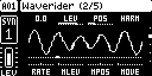
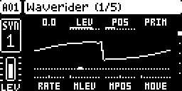
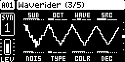
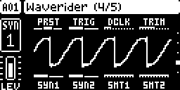
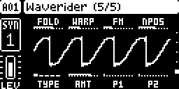
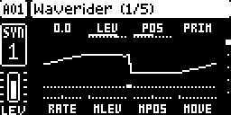
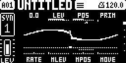
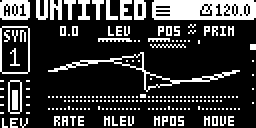

Digitone II Mods / waverider
A sixth synth machine for the Digitone II. Waverider has two wavetable oscillators, a sub-oscillator and a noise generator. MOVE sweeps each oscillator through its table. You put the tables on the +Drive with DNX.

This tab does all the work in your browser. The page does not upload your firmware file, because the page has no server. The page is a set of static files on GitHub Pages. You can read all of its code in the repository.
Make sure that you can go back to stock before you flash a modified file. The Early Start-up Menu flashes the stock firmware over MIDI. Do this one time with the stock file before you flash a modified file. Back up your +Drive with DNX.
Use Elektron's Digitone II OS 1.11 .syx file. To combine mods, you
can also use a file from a different page on this site (refer to "Combines with" below).
Or drag the file here.
DNX also runs in your browser. Use DNX to back up the +Drive and to put wavetables from WAV files on it. DNX also controls the pool of each project. When you go back to stock, DNX erases the Waverider data.
No other steps are necessary. At first, the +Drive has no wavetables. When you add the first table with DNX, the unit prepares the storage.
You can combine Waverider with the other mods, but not with the LFO modulation of the FX, the fourth LFO and the FM drum transients. The pages do not let you combine Waverider with these three mods. We examined the combinations in the emulator, not on an instrument.
The table below is the Waverider row of the compatibility table. ✓: you can combine the two mods in either order. ✓*: you can combine them in one order only. ✗: you cannot combine them. To see the reason, put the pointer on a cell.
arpmodes | arpplocks | arpscale | bootscreen | fxmod | layermidi | lfo4 | lfolength | lfowaves | midiarp | moddest | reloadconfirm | songguard | transients | usbprobe | waverider | |
|---|---|---|---|---|---|---|---|---|---|---|---|---|---|---|---|---|
Waverider, a sixth machine waverider | ✓ | ✓ | ✓ | ✓ | ✗ | ✓ | ✗ | ✗ | ✓ | ✓ | ✓ | ✓ | ✓ | ✗ | ✓ | — |
WAVERIDER is in MACHINE SEL, after SWARMER. A Waverider track has five SYN pages. The header shows Waverider (1/5) to Waverider (5/5).
Page 1 is for oscillator 1. Page 2 is for oscillator 2. The two pages have the same controls.

| Knob | Control | Function |
|---|---|---|
| A | TUNE / DETN | The pitch in semitones. TUNE changes the pitch of the two oscillators. DETN is the difference from oscillator 1 |
| B | LEV | The level, 0 to 127. At 100, the gain is 1 |
| C | POS | The position in the table, 0 to 120 |
| D | TBL | The table: Prim., Harm., then the pool tables from T:001 |
| E | RATE | The speed of MOVE, 0 to 100. When SYN1 or SYN2 is on, RATE shows a note length |
| F | MLEV | How much MOVE decreases the level, 0 to 127. At 0, MOVE does not change the level |
| G | MPOS | How much MOVE changes the position, 0 to 100. At 50, MOVE does not change the position |
| H | MOVE | The shape that MOVE follows. There are eleven shapes |
The wave shows only one voice. Usually, this is the voice of the newest note. If not, it is the first voice that the page selected. The unit calculates all the voices, and you hear all of them. One cursor for each note is in "Plans".
There are eleven MOVE shapes. These five shapes stop at their end: Ramp Up, Ramp Down, Exp Up, Exp Down and Tri Once. These six shapes repeat: Up Loop, Down Loop, Tri Loop, Square, Rnd Hold and Rnd Glide.

| Knob | Control | Function |
|---|---|---|
| A | SUB | The level of the sub-oscillator, 0 to 127. At 0, the sub-oscillator is off |
| B | OCT | -1, -2 or -3 octaves below the oscillator that it follows |
| C | WAVE | The wave: SIN, TRI, SQR or PLS (a 25 % pulse) |
| D | SRC | The oscillator that the sub-oscillator follows: OSC1 or OSC2 |
| E | NOIS | The level of the noise, 0 to 127. At 0, the noise is off |
| F | TYPE | The noise type: WHT, PNK, BRN or DIG |
| G | COLR | The tilt of the spectrum, -64 to +63. A negative value adds low frequencies. A positive value removes them |
| H | DEC | The decay of the noise after each note, 0 to 126 (5 ms to 10 s). At Inf, the noise stays at full level |
The middle of the page shows the sub-oscillator and the noise.

| Knob | Control | Function |
|---|---|---|
| A | PRST | The phase at the start of a note: Off, On or Random. With On, the phase starts at 0 and the same note has the same sound each time |
| B | TRIG | With Retrig, MOVE starts again on each note. With Free, MOVE does not start again on a note |
| C | DCLK | A crossfade when TBL or POS changes suddenly: Off, or 1 to 100 ms. A new sound starts at 3 ms |
| D | TRIM | The output level of the machine, -15.0 to 0.0 dB. The default is -11.0 dB. At this value, the level is the same as a default WaveTone |
| E | SYN1 | Off or On. With On, the MOVE of oscillator 1 follows the tempo |
| F | SYN2 | The same as SYN1, for oscillator 2 |
| G | SMT1 | The glide time of POS on oscillator 1. At 127, the glide is off |
| H | SMT2 | The same as SMT1, for oscillator 2 |
The middle of the page shows the sound of the track as a scope.

The top row has FOLD, WARP, FM and NPOS. The bottom row has TYPE, AMT, P1 and P2. These controls are for sound functions in a future version. They do not change the sound now. You can set and p-lock them. The middle of the page shows the scope, as on page 4.
When an LFO or MOVE changes POS or TBL, the page shows the value that you hear next to the value that you set. Only POS and TBL show this, on the two oscillators. All other controls show only the value that you set. When a control does not move, the page shows nothing more. The page removes the range about two seconds after the movement stops.



The reason for 3 Hz and 12 Hz: the page updates the screen up to 24 times a second. Up to 3 Hz (1/8 of that rate), the dot moves smoothly. Up to 12 Hz (1/2 of that rate), the dot moves in steps. Above 12 Hz, a dot that moves shows an incorrect, slower movement. For this reason, above 12 Hz the page shows only the range.
We made these captures in the emulator. The emulator does not run LFOs. For this reason, we wrote the value that you hear into the capture by hand. The emulator makes no sound. For this reason, the scopes on pages 4 and 5 show Waverider output that we rendered outside the instrument.
Do steps 1 to 4 before step 5. The stock firmware 1.11 cannot get access to the wavetable region. If you flash the stock firmware first, the data stays on the +Drive. To remove it, flash Waverider again, do steps 1 to 4, and then flash the stock firmware again.
The erase does not change your projects, presets, kits and samples. A project that you saved with Waverider tracks stays on the unit. To put a table back later, drag its file onto a free slot in the Wavetables list of DNX.
Each row is one test. The row shows the test, where it ran and the result. "Instrument" is the Digitone II of the maintainer, with OS 1.11.
| What | Where | Result | Date |
|---|---|---|---|
| A project with no pool shows an empty pool. A table that you add stays after SAVE and LOAD. CREATE NEW has an empty pool | instrument | passed | 2026-10-14 |
| On the file from this page: DNX stores a table, deletes a table and changes the pool of the working project | instrument | passed | 2026-10-14 |
| DNX erases the wavetable region: the unit shows no tables and an empty pool. A saved table that DNX writes back plays | instrument | passed | 2026-10-14 |
| The page builds the same file as the command line. The file starts from reset with no fault | browser and emulator | the same file. 21 of 21 integrity checks pass | 2026-10-14 |
| Stock 1.11 loads a project saved with a Waverider track | emulator | the project loads with no fault. The track shows as FM Tone | 2026-10-14 |
| One second of output from the DSP code (48,000 samples), each block compared with the model | emulator (SHARC) | 0 samples are different | 2026-10-14 |
| The erase removes the tables and the pools, and refuses incorrect requests | emulator | 11 of 11 checks pass | 2026-10-13 |
| The LFO DEST list: the order and the labels of all the controls | instrument | passed | 2026-10-13 |
| Ten minutes of a 16-note chord on a 64x2048 table | instrument | 0 overruns in 600 s | 2026-10-12 |
| High notes on Prim. and on pool tables, with no aliasing (mip-maps) | instrument | passed | 2026-10-09 |
| A pool for each project: SAVE AS, LOAD, CREATE NEW and the wavetable page | instrument | passed | 2026-10-06 |
| SYNC to the tempo, the POS glide and the DCLK crossfade | instrument | passed | 2026-10-06 |
| DNX writes a table to the +Drive. The unit lists it, reads it back with no change and plays it from TBL | instrument | passed, 6 of 6 steps | 2026-10-05 |
| MOVE: the eleven shapes on the two oscillators | instrument | passed | 2026-10-04 |
| Two oscillators, LEV, DETN as a detune and page 2 | instrument | passed | 2026-10-02 |
With a 16-note chord, the DSP load of Waverider is almost the same as the load of FM Tone: 65.0 % and 62.9 %. Each bar shows the median load on a Digitone II, from readings of one second, with 16 voices.
The scale of the bars is 0 to 100 %. We measured Waverider on 2026-10-12, with the two oscillators on, and the sub-oscillator and the noise as in the test project. We measured the factory machines on 2026-10-09, in an earlier project. For ten minutes on the 64x2048 table, the load stayed at 65.0 %, with no overruns.
| Part | Cycles for each voice in each block |
|---|---|
| Sub-oscillator | +742 |
| Noise, WHT | +905 |
| Noise, PNK with a decay | +2,022 |
| Sub and noise together | +2,764 |
| A full FM Tone voice, for comparison | +11,113 |
A table in the pool uses no DSP time when no voice plays it. The DSP builds a 64x2048 table in about 0.16 s, in time that it does not use for the sound.
The version of Waverider is v0.1.0 (alpha). The list shows the changes in each version, with the newest first.
We plan these functions. We do not give dates, and the order may change.